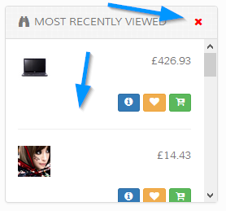

Recently Viewed
This provides visitors with an easy at a glance option of which products they have recently viewed.

Recently viewed items are only visible for the duration of the browser session if a visitor isn`t logged in and will auto clear when the browser closes. If a visitor is logged
in the recently viewed items are remembered.